A look back at the smiles, sunshine & community spirit from previous years
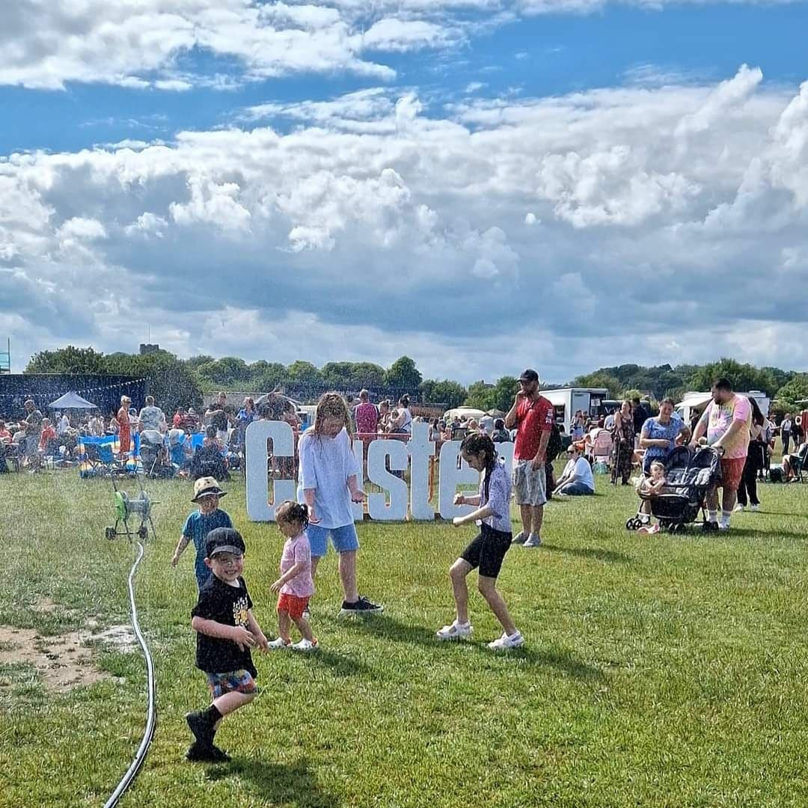
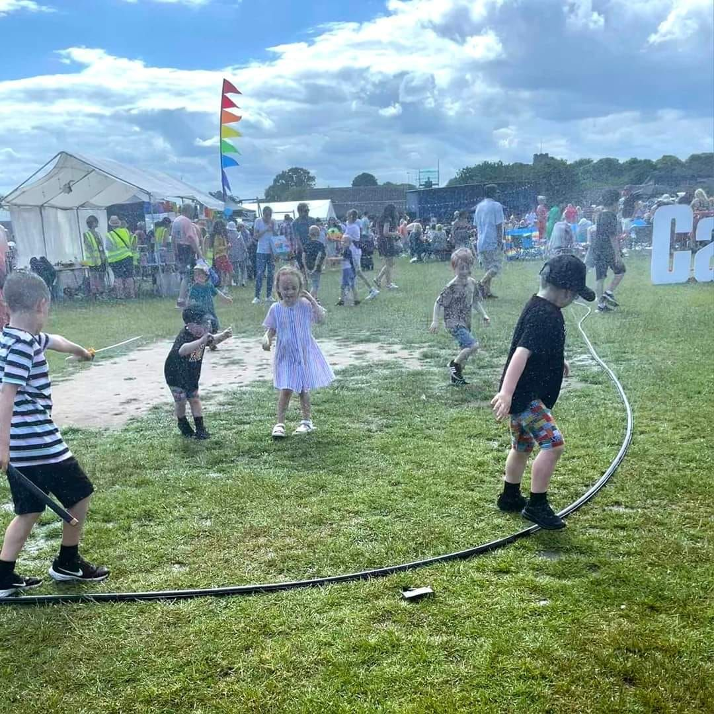
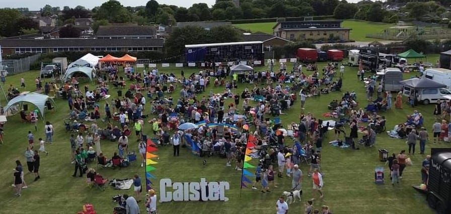
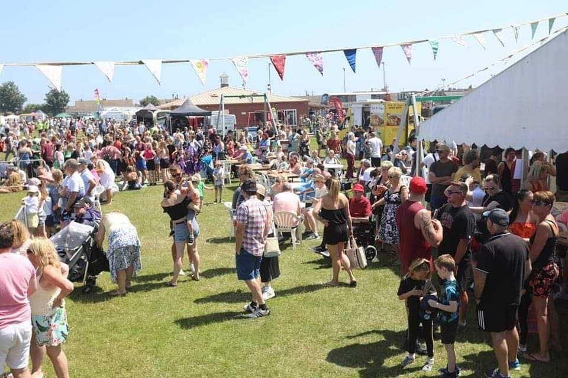
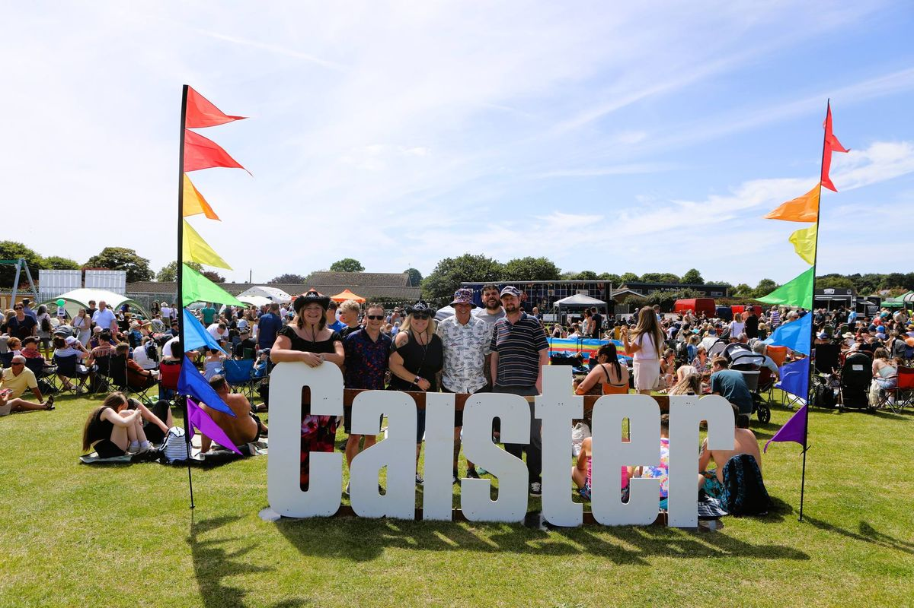
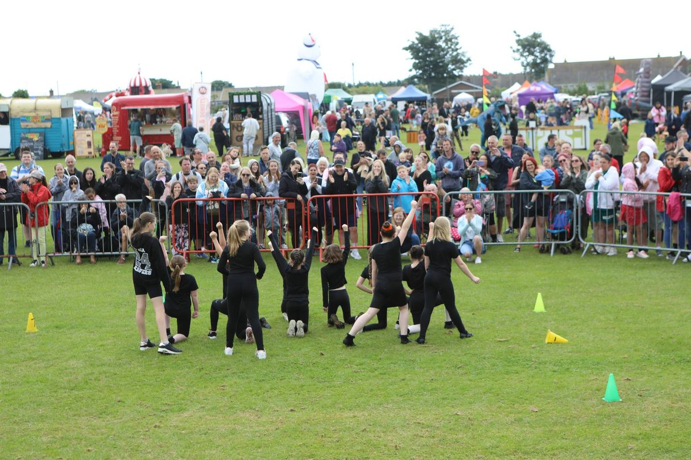
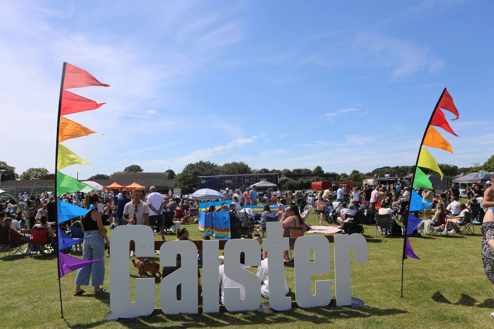
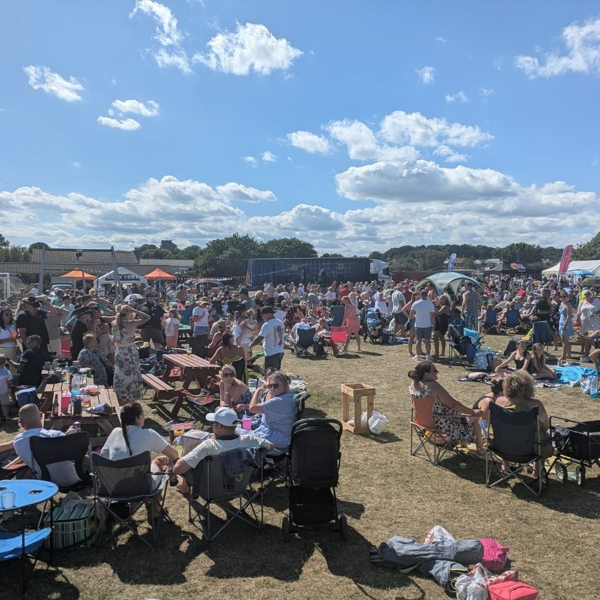
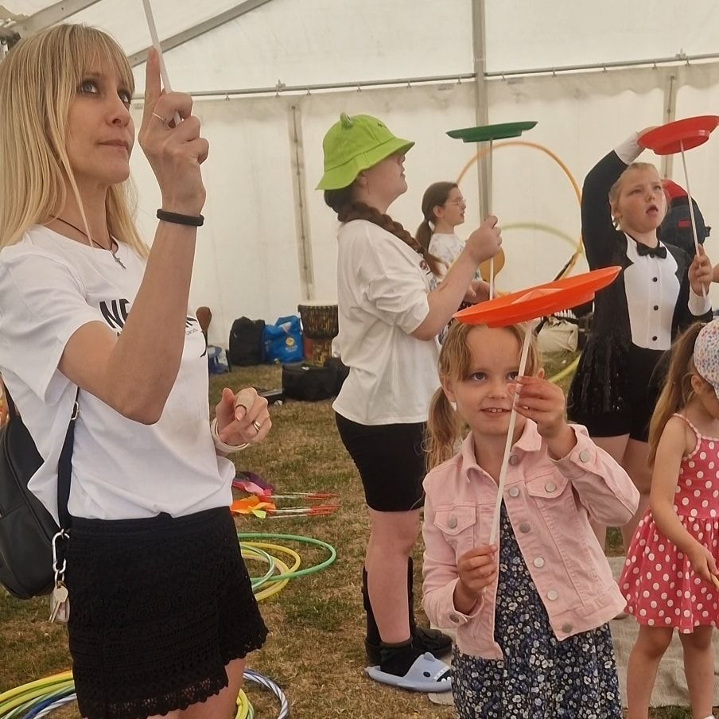
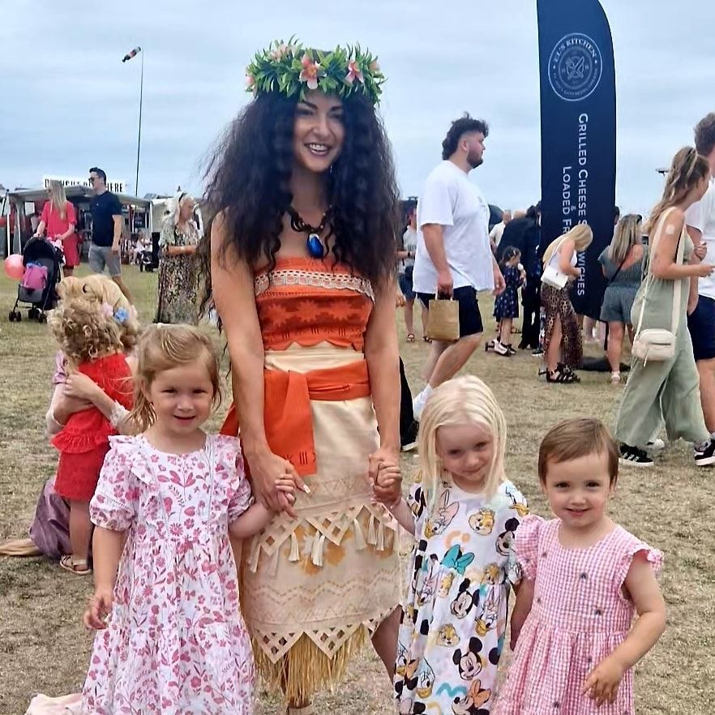
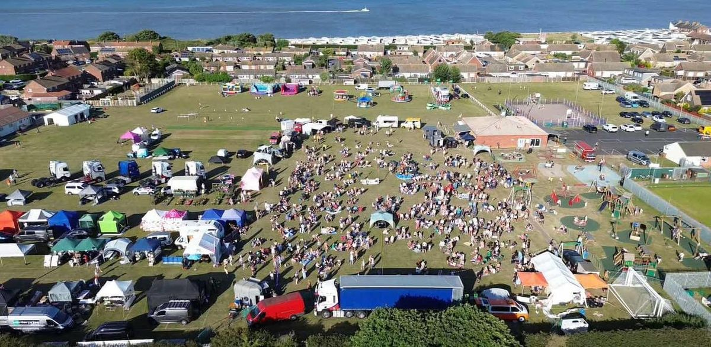
Got photos from a previous Caister Festival? We'd love to feature them here — get in touch and share your memories with the community!
📸 Share Your Photos →